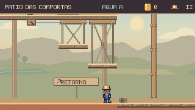
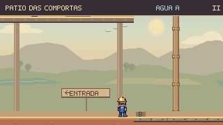
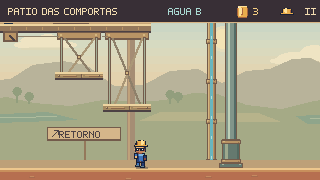
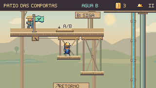

Revisão mais recente: jatos em duas alturas e interrupções pelos registros →
Um retorno curto
ao desafio.
O Pátio das Comportas ganhou uma escada de manutenção, liberada ao alcançar o ponto seguro central. Errar a travessia final agora permite voltar ao patamar com a seleção da água e as moedas preservadas.


ANTESDEPOISDois degraus conectam o piso inferior ao ponto seguro. O mecanismo continua aberto quando o jogador muda entre A e B. A placa indica o retorno, e as guias acompanham a posição real de cada degrau.
O progresso abre um caminho
A escada é liberada pela chegada ao patamar. Antes disso, fica recolhida sob o piso. A primeira travessia pelo tablado A continua sendo necessária.
Espaço para dominar o salto
Saltos curtos permitem usar os dois degraus. Um salto mais forte pode pular o degrau superior. A câmera mostra a borda de chegada desde a aproximação pelo piso seco.
Errar, recuperar e concluir
Feka coleta as três moedas do patamar opcional, erra o salto final e retorna pelos dois degraus. A água permanece em B e a coleta continua visível no HUD até a conclusão.
O caminho de volta, passo a passo


O contador de moedas e o capacete agora ocupam os mesmos lugares do HUD das outras fases. O indicador A/B continua visível ao lado. O aviso existente informa a abertura da escada e depois volta a orientar o seletor.
Conferência desta rodada
961 testes de Guaíra e build aprovados. Os 15 testes novos cobrem os dois percursos por teclado e toque simulado, movimento reduzido, variações do salto, pausa, restauração e leitura das moedas.
As gravações levaram cerca de 5,3 segundos entre a aterrissagem no piso seco e o retorno ao patamar. É o tempo dessas execuções ensaiadas; não é uma estimativa para quem está descobrindo o caminho.
Os dois percursos também passaram no capítulo real em navegador isolado, com teclado e avanço da simulação controlado a 60 Hz. A conclusão foi aceita pelo capítulo e o botão Continuar retornou ao mapa. As oito cenas passaram pela conferência de entrada, pausa e retorno.
Capturas e percursos · Percursos no capítulo · Conferência das oito cenas · Registro técnico